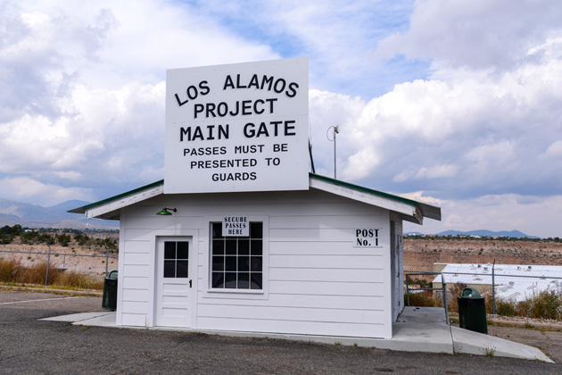
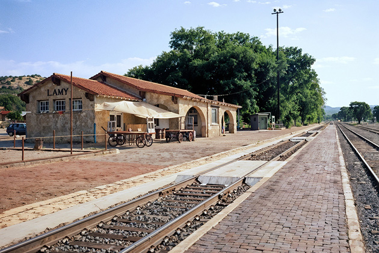
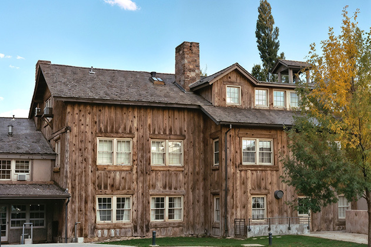
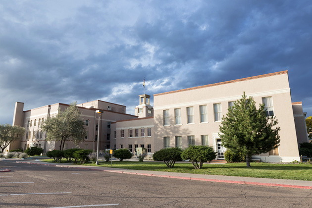
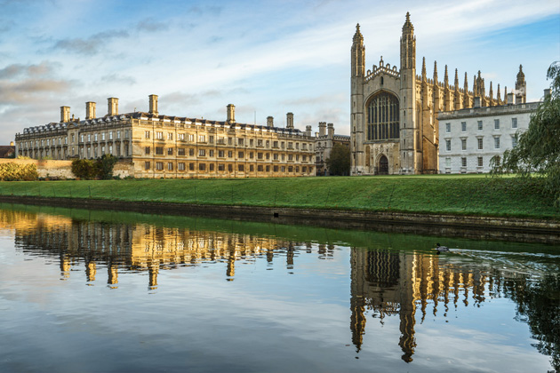
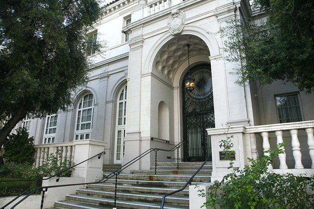

Oppenheimer
Main Content

Discover the places where Christopher Nolan's Oscar-winning Oppenheimer (2023) was filmed around the world: in New Mexico, Los Angeles, New Jersey in the USA; Cambridge in the UK and in Switzerland.
The complex flashback structure of Christopher Nolan’s crazily successful biopic (though that seems too small a word) would make a standard narrative account impossible so we'll just whizz through the locations.
The framing device is the AEC hearing to review the security clearance of Robert Oppenheimer (Cillian Murphy). The hearing's intensely claustrophobic atmosphere was achieved by filming this in the genuinely constricting confines of a real, none-too-large, office in The Alhambra, an office complex at 1000 South Fremont Avenue, Alhambra in the San Gabriel Valley, about eight miles northeast of Downtown Los Angeles.
The main focus of the film though, is on the Los Alamos complex in New Mexico, home to the Manhattan Project, to build an atomic bomb before Nazi Germany during WWII.
Los Alamos, an isolated town in northern New Mexico, was virtually taken over by by the US government and developed as a highly secret ‘closed city’ to house and service the people working on the project, and accessible by only two gates.
It was finally opened up to the public in 1957. In fact, some interiors remain unchanged from the 1940s, including that of the1929 ranch-style home which was occupied by the Oppenheimers. This was used in the film but it remains a private residence and isn’t open to visitors.
Another place you can't visit is the Civilian Women’s Dormitory which housed many of the women who worked there. This was used as the lab where the progress of the amounts of uranium and plutonium processed are displayed using those glass bowls of marbles.
Other places in Los Alamos, managed by the National Park Service, are available for self-guided tours.

Workers on the project arrive at Lamy Train Station, a Spanish Mission-style structure on Old Lamy Trail in Lamy, a town just south of Santa Fe. The station predates the town, being built in 1909 for the Atcheson Topeka and Santa Fe Railway – yes, that’s the one immortalised in song by Judy Garland in 1946 movie The Harvey Girls.

Fuller Lodge, 2132 Central Avenue, built in 1928 as the dining hall for the Los Alamos Ranch School, also predates the town. After being requisitioned in 1942, it was converted into a community centre, and that’s how it’s seen in the film. Today it functions as an arts centre.
Los Alamos itself couldn't be used for exterior shots as it's been substantially redeveloped since the 1940s with more modern homes and strip malls.
This meant recreating it from scratch. The town, as it used to be, was constructed at Ghost Ranch, Abiquiu, on US84, about 40 miles north of the real thing.
Once the home of painter Georgia O'Keeffe, the Ranch is now an education and retreat centre. Its 21,000 acres were given to the Presbyterian Church in 1955 as part of a land grant called Piedra Lumbre ('Shining Rock')The dramatic name ‘Ghost Ranch’ was supposedly inspired by the numerous tales hauntings. In fact, it was once home to cattle rustlers who called it 'Ranch of the Witches' to discourage people from nosing around. The name was re-imagined, as we'd say today, by a subsequent owner.
Among other films featuring the spectacular scenery around Ghost Ranch are Steven Spielberg’s Indiana Jones and the Kingdom of the Crystal Skull; Cowboys and Aliens, with Harrison Ford; Jim Sheridan’s Brothers (2009) with Tobey Maguire and Jake Gyllenhaal; James Mangold’s 2007 remake of 3:10 to Yuma, Lawrence Kasdan’s Wyatt Earp (1994) with Kevin Costner; City Slickers, Antoine Fuqua's 2016 remake of The Magnificent Seven and others. You can take a Ghost Ranch Movie Tour.
The tower for the Trinity test of the prototype bomb was reconstructed for the film near Belen, Valencia County, south of Albuquerque in the centre of New Mexico. This is about 200 miles north of the real site – White Sands Missile Range.
The bomb (before being fully assembled) actually passed through Belen en route to the real test site. Local legend maintains that there was a brief stop here, at (the now gone) Roy's Cafe on Main Street.
One more major location featured throughout the film is another security hearing, this one to determine the suitability of Lewis Strauss (Robert Downey Jr) for the cabinet post of Commerce Secretary.

Although this took place in ‘Washington DC’, the hearing was filmed in the Bataan Memorial Building, 400 Don Gaspar Avenue, Santa Fe which, until 1966, served as New Mexico’s State Capitol.
Now to the many other secondary locations, many of which are the authentic places.

First to the UK, and Cambridge University, where Oppenheimer proves useless in the lab and (in the movie) almost offs Nils Bohr (Kenneth Branagh) with a cyanide-laced apple.
Dating from the 13th century, Cambridge is the world’s third oldest university, just behind its rival, Oxford. I’m not sure laboratory interiors were filmed here but the exteriors are real enough.
The scene-setting shows picturesque Kings College overlooking the River Cam. It looks gorgeous but Oppenheimer studied at Christ’s College.
Strauss first meets Oppenheimer on the campus of the Institute for Advanced Study, Princeton, New Jersey, in front of Fuld Hall, which stands on Einstein Drive. The address alerts you to the fact that, yes, Albert Einstein was here. The great scientist was never officially on the facility of Princeton but he taught and lived here for many years.
The Institute's woods and grounds, though not the buildings, are open to visitors.
The relationship between Oppenheimer and Strauss becomes edgy after Strauss excitedly introduces Oppenheimer to Einstein (Tom Conti) only to discover they’re already friends. Einstein’s apparent, though unintended, snub is the basis of Strauss’s lingering animosity.

While in Europe, Oppenheimer meets another great physicist, Werner Heisenberg (I suppose casting Bryan Cranston would have been a distracting in-joke?) in 'Switzerland'. In reality, this is the Ebell Of Los Angeles, 4400 West Eighth Street at Lucerne Boulevard, Midtown LA.
A complex, comprised of a women’s club and the Wilshire Ebell Theatre, is a frequent filming location seen in The Addams Family, Ghost, Air Force One, The Artist, Catch Me If You Can, Old School, Cruel Intentions, Darkman and Death Becomes Her. It turns up as a hospital in both Forrest Gump and The Curious Case of Benjamin Button.
Back in the USA, Oppenheimer begins work alongside the more practical experimentalist Ernest Lawrence (Josh Hartnett) at the University of California, Berkeley, north of Oakland, across the Bay from San Francisco.
Although warned not to get involved in politics, Oppenheimer does tag along with his brother Frank (Dylan Arnold) to a Communist Party meeting, unaware of what this will mean for him in the future.
The venue for the meeting is the landmark 1904 craftsman home at 327 Sierra Woods Drive in Sierra Madre, known as the Edgar W Camp House. It was designed by the famous team of Greene and Greene, who also designed the Gamble House – Doc Brown's bungalow in Back to the Future.
It’s here he fatefully learns that the most effective way to send money to help the republicans in the Spanish Civil War is via the Communist Party and also where he starts an on/off physical relationship with Jean Tatlock (Florence Pugh).
Walking with Jean, Oppenheimer sees a frantic Ernest Lawrence rushing, half-shaved, out of a barber shop. Supposedly in ‘Berkeley’ they’re still in Sierra Madre, strolling past the Sierra Madre Playhouse in a charmingly unmodernised stretch of Sierra Madre Boulevard.
Lawrence’s apparently crazed behaviour is the result of hearing that the atom has been split – but by the Germans. The race is now on to weaponise nuclear power before the Nazi Germany.
As the team to work on “the project” is assembled, it’s back to Princeton to recruit physicist Richard Feynman (Jack Quaid).
Responding to an emotional call from Jean Tatlock, Oppenheimer flies to ‘San Francisco’ to meet with her. The ‘San Francisco’ hotel is the South Galleria of the familiar Millennium Biltmore Hotel, 506 South Grand Avenue, a smart Spanish-Italian Renaissance landmark, Downtown Los Angeles.
Built in 1923, the Biltmore has been a regular movie location over the years, from Beverly Hills Cop, The Sting and Ghostbusters to In The Line Of Fire, New York, New York, John Carpenter's They Live, Splash, Independence Day, Species and Daredevil. It hosted the Oscars, too, during the Thirties.
One studio interior is The White House’s Oval Office, where President Harry Truman (Gary Oldman) calls Oppenheimer a “cry baby”. This was meant to have been filmed in The Richard Nixon Presidential Library and Museum in Yorba Linda, California. When that became suddenly unavailable, the studio set from Armando Iannucci’s satirical TV series Veep was hurriedly brought out of storage to be reassembled and redressed at Universal Studios.
Visit Info
Visit The Film Locations
New Mexico
Visit: New Mexico
Visit: Los Alamos
Visit LOS ALAMOS SITES: National Park Service
Visit: Lamy Train Station
Visit: Abiquiu
Visit: Ghost Ranch, Abiquiu
TAKE THE: Ghost Ranch Movie Tour
Visit: Santa Fe
California | Los Angeles
Visit: Los Angeles
Flights: Los Angeles International Airport (LAX), 1 World Way, Los Angeles, CA 90045 (tel: 424.646.5252)
Travelling around: Los Angeles Metro
Stay at: the Millennium Biltmore Hotel, 506 South Grand Avenue, Los Angeles, CA 90071 (tel: 213.624.1011)
VISIT: the Ebell Of Los Angeles, 743 South Lucerne Boulevard, Los Angeles, CA 90005 (tel: 323.931.1277)
New Jersey
Visit: New Jersey
Visit: Princeton
Visit: the Institute for Advanced Study, Princeton
UK | Cambridgeshire
Visit: Cambridgeshire
Visit: Cambridge (rail: King's Cross Station, London)
Visit: Cambridge University
Switzerland
Visit: Switzerland